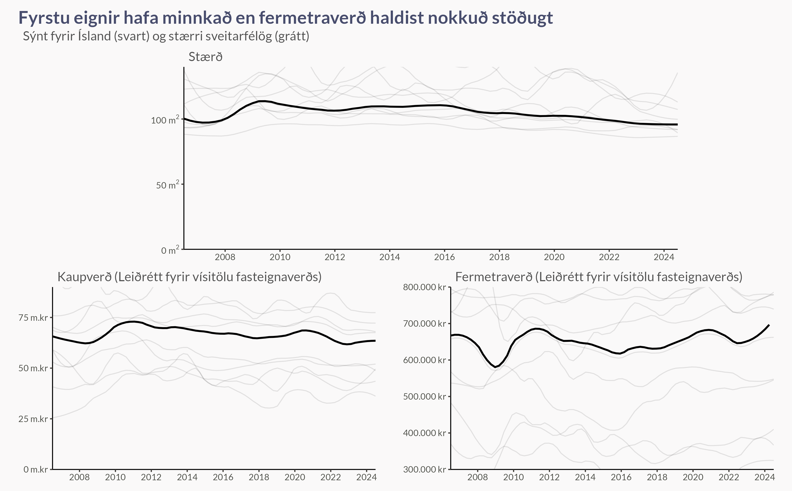
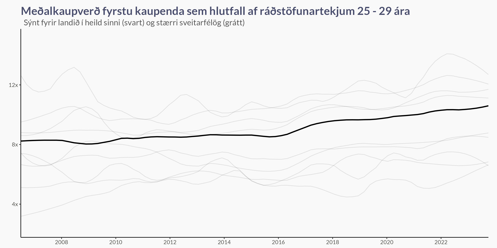

Nýlega var umsjón fasteignaskrár flutt frá Þjóðskrá til Húsnæðis- og mannvirkjastofnunar (HMS). Núna er því hægt að nálgast öll gögn sem tengjast henni á fasteignaskra.is. Hér ætlum við að skoða gögnin um fyrstu kaupendur. Með því að skoða “page source” getum við púslað saman hlekki á JSON skrárnar á bak við myndirnar á síðunni.
Fyrst sjáum við að fleiri kaupendur eru fyrstu kaupendur en áður og að þau eignast sína fyrstu fasteign fyrr, en það varð smá stöðnun í þessari þróun síðasta árið.
Næst sjáum við að fyrsta fasteign fólks er aðeins minni en hún var fyrir 15 árum. Á móti kemur að kaupverðið (leiðrétt fyrir vísitölu fasteignaverðs) hefur lækkað, og fermetraverðið (leiðrétt fyrir vísitölu fasteignaverðs) því haldist nokkuð stöðugt.

En leiðrétting fyrir vísitölu fasteignaverðs sýnir okkur ekki endilega hvernig ungt fólk er stætt þegar kemur að því að kaupa fasteign. Til þess viljum við frekar sækja gögn Hagstofu um tekjur eftir kyni og aldri. Hér notum við miðgildi ráðstöfunartekna 25 - 29 ára einstaklinga og skoðum meðalkaupverð fyrstu fasteigna sem hlutfall af ráðstöfunartekjunum. Þá sjáum við að þótt fyrsta fasteignin kostar minna en áður miðað við aðrar fasteignir (lækkun þegar leiðrétt fyrir vísitölu fasteignaverðs), þá kostar hún fleiri ár af tekjum. Nánar tiltekið hefur meðalverðið, talið sem ár af ráðstöfunartekjum, farið úr rétt rúmlega 8 í um það bil 11 ár.
